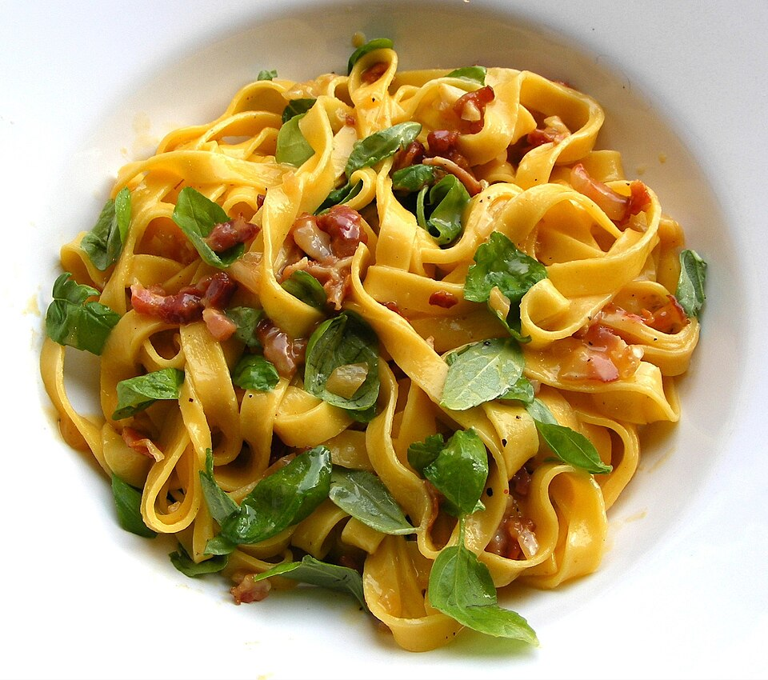

The Four-Course Italian Journey.
In our thirteen-table Victorian dining room, we serve a curated four-course prix fixe menu celebrating the classical progression of an Italian dinner: Primi, Pasta, Entrata, and Dolci. At our intimate bar, guests may enjoy a curated selection of dishes and pastas à la carte alongside spirit-driven cocktails.

Course I: Primi & Antipasti
Opening courses showcasing hyper-seasonal Carolina produce and house-baked breads.
Slow-fermented rosemary sea salt focaccia served warm with cultured honey butter and first-cold-pressed Sicilian olive oil.
Speckled winter chicories, shaved 24-month parmigiano reggiano, toasted Georgia walnuts, and fifteen-year aged balsamic vinaigrette.
Thinly sliced coastal yellowfin tuna with calabrian chili oil, preserved citrus pearls, wild sea fennel, and flaky salt.
Ember-roasted local gold and chioggia beets, whipped sheep milk ricotta, pistachio gremolata, and wild arugula.
Course II: Handcrafted Pasta
Extruded and hand-folded fresh daily from Italian semolina and local farm eggs.
Silky egg dough tagliatelle ribbons tossed with slow-braised heritage pork belly ragù, fresh rosemary, cracked pepper, and parmigiano.
Extruded bronze-die penne coated in spicy San Marzano tomato reduction, roasted garlic cloves, fresh basil, and sharp pecorino romano.
Hand-pinched pasta pillows filled with roasted sweet corn custard and house ricotta, bathed in brown butter and crispy sage.
Square-cut chitarra spaghetti with sweet blue crab, Meyer lemon butter, toasted garlic breadcrumbs, and fresh chives.
Course III & IV: Entrata & Dolci
Hearty main courses followed by traditional Italian dessert finishes.
Cast-iron seared heritage pork chop, charred treviso radicchio, grilled local peaches, and reduced rosemary pork jus.
Pan-roasted local flounder fillet with braised Roman artichokes, caperberries, Meyer lemon, and white wine emulsion.
Savoiardi ladyfingers soaked in dark roast espresso and marsala wine, layered with airy whipped mascarpone and dark Valrhona cocoa.
Velvety sweet milk custard scented with vanilla bean, served with macerated Carolina blackberries and grappa reduction.
The Cocktail & Amaro Salon
Curated by beverage director Amanda Britton. Available at tables or à la carte at the bar.
Our whimsical namesake: Miller High Life lager infused with bittersweet Aperol and fresh squeezed lemon juice, served in the iconic pony bottle.
Bourbon, Amaro Nonino Quintessentia, Aperol, and fresh lemon juice, vigorously shaken and served in a chilled coupe with bamboo lemon peel garnish.
Conniption American Dry Gin, Carpano Antica Formula sweet vermouth, and Campari with a fat hand-carved ice sphere and expressed orange peel.
Three 1-oz neat pours exploring Italian herbal terroir: Fernet Branca (Lombardy), Amaro Montenegro (Bologna), and Braulio Alpine (Bormio).